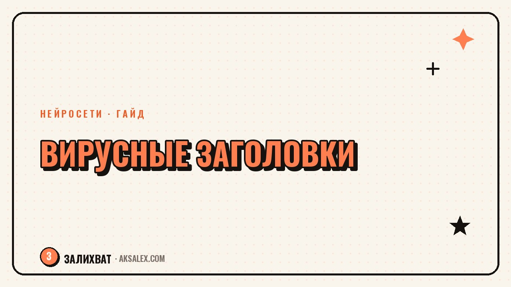

Как писать вирусные заголовки с нейросетью

Заголовок решает, откроют твой пост или пролистнут. Даже сильный текст умирает под слабым заголовком, потому что до текста никто не доходит. Хорошая новость: цепляющие заголовки строятся по формулам, а нейросеть выдаёт по ним десятки вариантов за минуту. Разберём, что делает заголовок вирусным, как заставить нейросеть выдавать живые варианты и как отобрать из них лучший.
Что превращает заголовок в вирусный
Вирусный заголовок цепляет за одну из базовых струн: любопытство, выгоду, страх упустить или узнавание. Человек читает первую строку и внутри что-то щёлкает - он должен узнать, что дальше. Если этого щелчка нет, заголовок проходит мимо, каким бы грамотным он ни был.
Второй признак - конкретность. Размытое обещание не работает: не полезные советы по блогу, а три ошибки, из-за которых Reels не набирает просмотры. Цифры, сроки и детали делают заголовок осязаемым и вызывают доверие.
Заголовок продаёт не текст, а следующую секунду внимания. Его работа - чтобы человек не смог не открыть.
Формулы, которые заходят почти всегда
Эти шаблоны наполняются любой темой за минуту. Бери формулу, подставляй свою нишу - и получаешь заготовку заголовка, которую останется отшлифовать.
- «3 ошибки, из-за которых [проблема]».
- «Как [результат] за [срок] без [боль]».
- «Никто не говорит, но [неожиданный факт]».
- «Я делал [X] годами и зря. Вот как правильно».
- «Что будет, если [действие] - проверила на себе».
- «Перестань [частая ошибка], делай так».
- «[Число] способов [желаемое], о которых ты не знал».
Не относись к формулам как к жёсткому шаблону. Это каркас, который ты наполняешь живым языком своей аудитории. Формула задаёт структуру, а цепкость появляется от конкретики и твоего голоса.
Как заставить нейросеть выдавать живое
Если попросить нейросеть придумать заголовок без контекста, получишь пресный шаблон. Секрет в детальном промпте: дай ей нишу, тему, боль аудитории и попроси сразу пачку вариантов разных типов. Из двадцати заготовок пара всегда окажется рабочей.
Ты - редактор вирусного контента. Ниша: [ниша]. Тема поста: [тема]. Аудитория и её боль: [кто, что болит]. Дай 15 заголовков разных типов - любопытство, выгода, ошибка, результат. Коротко, разговорно, без штампов и канцелярита. Пометь тип каждого.
Дальше проси доработку: сделай короче, добавь цифру, усиль интригу, убери пафос. Нейросеть хороша не первым ответом, а быстрой генерацией вариантов, среди которых ты выбираешь и докручиваешь лучшее.
Типы заголовков под задачу
Разные типы решают разные задачи и заходят в разных нишах. Ориентируйся по таблице, чтобы не бить заголовком мимо цели.
| Тип | Когда работает | Пример |
|---|---|---|
| Ошибка | Обучающий контент | «3 ошибки в оформлении профиля» |
| Выгода | Услуги, продукты | «Как удвоить охваты без бюджета» |
| Любопытство | Личный блог, истории | «Я чуть не удалила блог из-за этого» |
| Результат | Кейсы, трансформации | «1000 подписчиков за месяц с нуля» |
| Спор | Экспертный контент | «Хэштеги больше не работают. Вот почему» |
Собери себе пару шаблонов под каждый тип - и генерация заголовков станет рутиной на пять минут, а не творческим мучением перед каждым постом.
Как выбрать лучший из десятка
Нейросеть выдала пятнадцать вариантов - теперь нужен фильтр. Прочитай каждый вслух: цепкий звучит живо, слабый - вяло. Отсеки те, где есть штампы, канцелярит и обещания, которые текст не выполнит. Из оставшихся выбери два-три и, если можешь, протестируй их на разных постах.
- Звучит ли заголовок живо, когда читаешь вслух.
- Есть ли конкретика: цифра, срок, деталь.
- Выполнит ли текст обещание заголовка.
- Нет ли штампов вроде «в этой статье вы узнаете».
- Захотелось бы тебе самой открыть такой пост.
Не увлекайся кликбейтом, который текст не оправдывает: он даёт клик, но убивает доверие и досматриваемость. Сильный заголовок обещает ровно то, что человек получит внутри.
Частые вопросы
Можно ли доверять заголовки только нейросети?
Нейросеть отлично генерит варианты, но финальный выбор и доработку оставляй себе. Прочитай заголовки вслух, отсей штампы и докрути лучший под свой голос и аудиторию.
Сколько вариантов заголовка стоит генерировать?
Проси у нейросети 10-15 за раз разных типов. Из такой пачки почти всегда находится пара рабочих, которые останется отшлифовать под конкретный пост.
Чем вирусный заголовок отличается от кликбейта?
Вирусный заголовок цепляет и выполняет обещание внутри текста. Кликбейт цепляет, но обманывает ожидания - он даёт клик, но убивает доверие и досматриваемость.
Обязательно ли ставить цифру в заголовок?
Не обязательно, но цифра добавляет конкретики и доверия. Заголовки с числом ошибок или способов часто работают лучше размытых обещаний без деталей.
Как понять, что заголовок сработал?
Смотри охваты и переходы к посту в статистике. Если один заголовок стабильно собирает больше кликов на похожих темах, значит его формулу стоит повторять.
Раз тема оказалась полезной, вот что почитать следующим. Разбираем ИИ-аватары для блога: когда они полезны, а когда только вредят доверию.
Читать статью →а не вручную